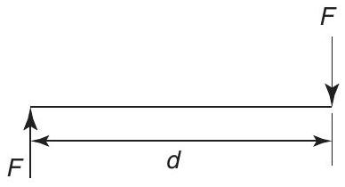
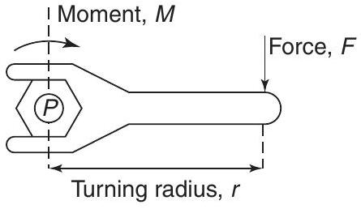
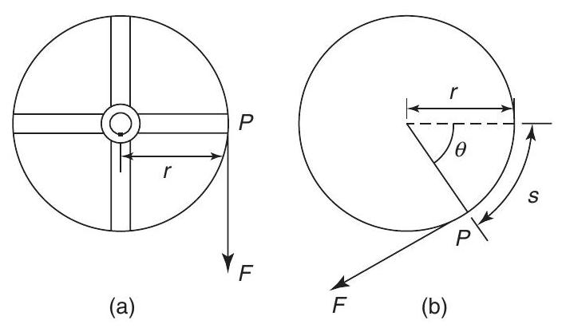
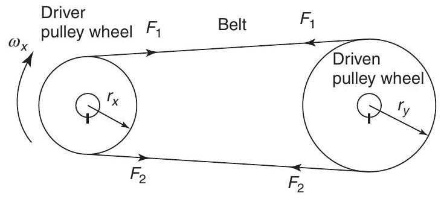

Mechanical science - Torque
Torque
At the end of this chapter you should be able to:
- define a couple
- define a torque and state its unit
- calculate torque given force and radius
- calculate work done given torque and angle turned through
- calculate power, given torque and angle turned through
- appreciate kinetic energy $=\frac{I \omega^{2}}{2}$ where $I$ is the moment of inertia
- appreciate that torque $T=I \alpha$ where $\alpha$ is the angular acceleration
- calculate torque given $I$ and $\alpha$
- calculate kinetic energy given $I$ and $\omega$
- understand power transmission by means of belt and pulley
- perform calculations involving torque, power and efficiency of belt drives
9.1 Couple and torque
When two equal forces act on a body as shown in Figure 9.1, they cause the body to rotate, and the system of forces is called a couple.
Figure 9.1
The turning moment of a couple is called a torque, $T$. In Figure 9.1, torque $=$ magnitude of either force $\times$ perpendicular distance between the forces
The unit of torque is the newton metre, $\mathbf{N ~ m}$ When a force $F$ newtons is applied at a radius $r$ metres from the axis of, say, a nut to be turned by a spanner, as shown in Figure 9.2, the torque $T$ applied to the nut is given by: $\boldsymbol{T}=\boldsymbol{F} \boldsymbol{r} \mathbf{N} \mathbf{~ m}$
Figure 9.2
Problem 1. Determine the torque when a pulley wheel of diameter 300 mm has a force of 80 N applied at the rim.
Torque $T=F r$, where force $F=80 \mathrm{~N}$ and radius $$ r=\frac{300}{2}=150 \mathrm{~mm}=0.15 \mathrm{~m} $$. Hence, torque, $\boldsymbol{T}=(80)(0.15)=\mathbf{1 2} \mathbf{~ N ~ m}$
Problem 2. Determine the force applied tangentially to a bar of a screw jack at a radius of 800 mm , if the torque required is 600 N m
Problem 3. The circular hand-wheel of a valve of diameter 500 mm has a couple applied to it composed of two forces, each of 250 N. Calculate the torque produced by the couple.
Torque produced by couple, $T=F d$, where force $F=250 \mathrm{~N}$ and distance between the forces, $d=500 \mathrm{~mm}=0.5 \mathrm{~m}$. Hence, torque, $\boldsymbol{T}=(250)(0.5)=\mathbf{1 2 5} \mathbf{~ N ~ m}$
Now try the following exercise
Exercise 44 Further problems on torque
- Determine the torque developed when a force of 200 N is applied tangentially to a spanner at a distance of 350 mm from the centre of the nut. [ 70 N m ]
- During a machining test on a lathe, the tangential force on the tool is 150 N . If the torque on the lathe spindle is 12 N m , determine the diameter of the work-piece. [160 mm]
9.2 Work done and power transmitted by a constant torque
Figure 9.3(a) shows a pulley wheel of radius $r$ metres attached to a shaft and a force $F$ Newton's applied to the rim at point $P$.
Figure 9.3
Figure 9.3(b) shows the pulley wheel having turned through an angle $\theta$ radians as a result of the force $F$ being applied. The force moves through a distance $s$, where arc length $s=r \theta$
However, $F r$ is the torque $T$, hence,
However, (angle $\theta) /($ time taken $)=$ angular velocity, $\omega \mathrm{rad}/ \mathrm{s}$
Hence, power, $\boldsymbol{P}=\boldsymbol{T} \omega$ watts
Angular velocity, $\omega=2 \pi n \mathrm{rad}/ \mathrm{s}$ where $n$ is the speed in rev/s
Hence, power, $P=2 \pi n T$ watts
Sometimes power is in units of horsepower (hp), where
i.e.
Problem 4. A constant force of 150 N is applied tangentially to a wheel of diameter 140 mm . Determine the work done, in joules, in 12 revolutions of the wheel.
Torque $\quad T=F r$, where $F=150 \mathrm{~N}$ and radius $$ r=\frac{140}{2}=70 \mathrm{~mm}=0.070 \mathrm{~m} $$. Hence, torque $T=(150)(0.070)=10.5 \mathrm{~N} \mathrm{~m}$. Work done $=T \theta$ joules, where torque, $T=10.5 \mathrm{~N} \mathrm{~m}$ and angular displacement, $\theta=12$ revolutions $=12 \times 2 \pi \mathrm{rad}=24 \pi \mathrm{rad}$. Hence, work done $=(10.5)(24 \pi)=792 \mathrm{~J}$
Problem 5. Calculate the torque developed by a motor whose spindle is rotating at 1000 $\mathrm{rev}/ \mathrm{min}$ and developing a power of 2.50 kW .
Power $\quad P=2 \pi n T$ (from above), from which, torque, $\quad T=\frac{P}{2 \pi n} \mathrm{~N} \mathrm{~m}$ where power, $P=2.50 \mathrm{~kW}=2500 \mathrm{~W}$ and speed, $n=1000/60 \mathrm{rev}/ \mathrm{s}$ Thus,
Problem 6. An electric motor develops a power of 5 hp and a torque of 12.5 N m . Determine the speed of rotation of the motor in rev/min.
Power, $$ P=2 \pi n T, \text { from which, } $$ speed $$ n=\frac{P}{2 \pi T} \mathrm{rev}/ \mathrm{s} $$ where power, $$ \begin{aligned} P & =5 \mathrm{hp}=5 \times 745.7 \\ &=3728.5 \mathrm{~W} \end{aligned} $$ and $$ \text { torque } T=12.5 \mathrm{~N} \mathrm{~m} $$. Hence, speed $n=\frac{3728.5}{2 \pi(12.5)}=47.47 \mathrm{rev}/ \mathrm{s}$ The speed of rotation of the motor $$ =47.47 \times 60=\mathbf{2848} \mathbf{~ r e v} / \mathbf{m i n} $$
Problem 7. In a turning-tool test, the tangential cutting force is 50 N . If the mean diameter of the work-piece is 40 mm , calculate (a) the work done per revolution of the spindle, (b) the power required when the spindle speed is $300 \mathrm{rev}/ \mathrm{min}$.
(a) Work done $=T \theta$, where $T=F r$ Force $F=50 \mathrm{~N}$, radius $r=\frac{40}{2}=20 \mathrm{~mm}=$ 0.02 m and angular displacement, $\theta=1 \mathrm{rev}=$ $2 \pi \mathrm{rad}$. Hence, work done per revolution of spindle $=\operatorname{Fr} \theta=(50)(0.02)(2\pi)=6.28 \mathrm{~J}$
(b) Power, $P=2\pi n T$, where torque, $T=Fr=$ $(50)(0.02)=1\mathrm{~N} \mathrm{~m}$ and speed, $n=\frac{300}{60}=$ $5\mathrm{rev}/ \mathrm{s}$. Hence, power required, $\boldsymbol{P}=2\pi(5)(1)$ $$=31.42\mathrm{~W}$$
Problem 8. A pulley is 600 mm in diameter and the difference in tensions on the two sides of the driving belt is 1.5 kN . If the speed of the pulley is $500\mathrm{rev}/ \mathrm{min}$, determine (a) the torque developed, and (b) the work done in 3 minutes.
(a) Torque $T=Fr$, where force $F=1.5\mathrm{kN}=$ 1500 N , and radius $r=\frac{600}{2}=300\mathrm{~mm}=0.3\mathrm{~m}$. Hence, torque developed $=(1500)(0.3)$ $$=450\mathrm{~N} \mathrm{~m}$$
(b) Work done $=T\theta$, where torque $T=450\mathrm{~N} \mathrm{~m}$ and angular displacement in 3 minutes $=(3 \times 500)\mathrm{rev}=(3 \times 500 \times 2\pi)\mathrm{rad}$. Hence, work done $=(450)(3 \times 500 \times 2\pi)=$ $4.24\times 10^{6}\mathrm{~J}=4.24\mathrm{MJ}$
Problem 9. A motor connected to a shaft develops a torque of 5 kN m . Determine the number of revolutions made by the shaft if the work done is 9 MJ .
Work done $=T\theta$, from which, angular displacement, $$ \theta=\frac{\text {work done}}{\text {torque}} $$ and $$ \begin{aligned} \text {Work done} & =9\mathrm{MJ}=9 \times 10^{6}\mathrm{~J} \\ \text {torque} & =5\mathrm{kN} \mathrm{m}=5000\mathrm{~N} \mathrm{~m}. \end{aligned} $$ Hence, angular displacement, $$ \theta=\frac{9 \times 10^{6}}{5000}=1800\mathrm{rad} $$ $2\pi\mathrm{rad}=1\mathrm{rev}$, hence, the number of revolutions made by the shaft $$ =\frac{1800}{2\pi}=286.5\mathrm{revs} $$
Now try the following exercise
Exercise 45 Further problems on work done and power transmitted by a constant torque
- A constant force of 4 kN is applied tangentially to the rim of a pulley wheel of diameter 1.8 m attached to a shaft. Determine the work done, in joules, in 15 revolutions of the pulley wheel. [339.3 kJ]
- A motor connected to a shaft develops a torque of 3.5 kN m . Determine the number of revolutions made by the shaft if the work done is 11.52 MJ . [523.8 rev]
- A wheel is turning with an angular velocity of $18\mathrm{rad}/ \mathrm{s}$ and develops a power of 810 W at this speed. Determine the torque developed by the wheel. [ 45 N m ]
- Calculate the torque provided at the shaft of an electric motor that develops an output power of 3.2 hp at $1800\mathrm{rev}/ \mathrm{min}$. [12.66 N m]
- Determine the angular velocity of a shaft when the power available is 2.75 kW and the torque is 200 N m . [13.75 rad/s]
- The drive shaft of a ship supplies a torque of 400 kN m to its propeller at 400 $\mathrm{rev}/ \mathrm{min}$. Determine the power delivered by the shaft. [16.76 MW]
- A motor is running at $1460\mathrm{rev}/ \mathrm{min}$ and produces a torque of 180 N m . Determine the average power developed by the motor. [ 27.52 kW ]
- A wheel is rotating at $1720\mathrm{rev}/ \mathrm{min}$ and develops a power of 600 W at this speed. Calculate (a) the torque, (b) the work done, in joules, in a quarter of an hour. [(a) 3.33 N m (b) 540 kJ ]
- A force of 60 N is applied to a lever of a screw-jack at a radius of 220 mm . If the lever makes 25 revolutions, determine (a) the work done on the jack, (b) the power, if the time taken to complete 25 revolutions is 40 s . [(a) 2.073 kJ (b) 51.84 W ]
9.3 Kinetic energy and moment of inertia
The tangential velocity $v$ of a particle of mass $m$ moving at an angular velocity $\omega\mathrm{rad}/ \mathrm{s}$ at a radius $r$ metres (see Figure 9.4) is given by:
Figure 9.4
The kinetic energy of a particle of mass $m$ is given by:
The total kinetic energy of a system of masses rotating at different radii about a fixed axis but with the same angular velocity, as shown in Figure 9.5, is given by:
Figure 9.5
In general, this may be written as:
where $I\left(=\Sigma m r^{2}\right)$ is called the moment of inertia of the system about the axis of rotation and has units of $\mathrm{kg} \mathrm{m}^{2}$. The moment of inertia of a system is a measure of the amount of work done to give the system an angular velocity of $\omega\mathrm{rad}/ \mathrm{s}$, or the amount of work that can be done by a system turning at $\omega\mathrm{rad}/ \mathrm{s}$. From Section 9.2, work done $=T\theta$, and if this work is available to increase the kinetic energy of a rotating body of moment of inertia $I$, then:
where $\omega_{1}$ and $\omega_{2}$ are the initial and final angular velocities, i.e.
However,
is the mean angular velocity, i.e. $\frac{\theta}{t}$, where $t$ is the time, and $\left(\omega_{2}-\omega_{1}\right)$ is the change in angular velocity, i.e. $\alpha t$, where $\alpha$ is the angular acceleration. Hence,
from which, torque $\boldsymbol{T}=\boldsymbol{I} \boldsymbol{\alpha}$ where $I$ is the moment of inertia in $\mathrm{kg} \mathrm{m}^{2}$, $\alpha$ is the angular acceleration in $\mathrm{rad}/ \mathrm{s}^{2}$ and $T$ is the torque in N m .
Problem 10. A shaft system has a moment of inertia of $37.5\mathrm{~kg} \mathrm{~m}^{2}$. Determine the torque required to give it an angular acceleration of $5.0\mathrm{rad}/ \mathrm{s}^{2}$.
Torque, $T=I\alpha$, where moment of inertia $I=$ $37.5\mathrm{~kg} \mathrm{~m}^{2}$ and angular acceleration, $\alpha=5.0\mathrm{rad}/ \mathrm{s}^{2}$. Hence, torque, $\boldsymbol{T}=(37.5)(5.0)=\mathbf{187.5}\mathbf{~ N ~ m}$
Problem 11. A shaft has a moment of inertia of $31.4\mathrm{~kg} \mathrm{~m}^{2}$. What angular acceleration of the shaft would be produced by an accelerating torque of 495 N m ?
Torque, $T=I\alpha$, from which, angular acceleration, $\alpha=\frac{T}{I}$, where torque, $T=495\mathrm{~N} \mathrm{~m}$ and moment of inertia $I=31.4\mathrm{~kg} \mathrm{~m}^{2}$. Hence, angular acceleration, $$ \alpha=\frac{495}{31.4}=15.76\mathrm{rad}/ \mathrm{s}^{2} $$
Problem 12. A body of mass 100 g is fastened to a wheel and rotates in a circular path of 500 mm in diameter. Determine the increase in kinetic energy of the body when the speed of the wheel increases from 450 $\mathrm{rev}/ \mathrm{min}$ to $750\mathrm{rev}/ \mathrm{min}$.
From above, kinetic energy $=I\frac{\omega^{2}}{2}$ Thus, increase in kinetic energy $=I\left(\frac{\omega_{2}^{2}-\omega_{1}^{2}}{2}\right)$ where moment of inertia, $I=mr^{2}$, mass, $m=100\mathrm{~g}=0.1\mathrm{~kg}$ and radius, $$ r=\frac{500}{2}=250\mathrm{~mm}=0.25\mathrm{~m} $$ Initial angular velocity, $$ \begin{aligned} \omega_{1} &=450\mathrm{rev}/ \mathrm{min}=\frac{450 \times 2\pi}{60}\mathrm{rad}/ \mathrm{s} \\ &=47.12\mathrm{rad}/ \mathrm{s} \end{aligned} $$ and final angular velocity, $$ \begin{aligned} \omega_{2} &=750\mathrm{rev}/ \mathrm{min}=\frac{750 \times 2\pi}{60}\mathrm{rad}/ \mathrm{s} \\ &=78.54\mathrm{rad}/ \mathrm{s} \end{aligned} $$ Thus, increase in kinetic energy $$ \begin{aligned} &=I\left(\frac{\omega_{2}^{2}-\omega_{1}^{2}}{2}\right)=\left(mr^{2}\right)\left(\frac{\omega_{2}^{2}-\omega_{1}^{2}}{2}\right) \\ &=(0.1)(0.25^{2})\left(\frac{78.54^{2}-47.12^{2}}{2}\right)=\mathbf{12.34}\mathbf{~ J} \end{aligned} $$
Problem 13. A system consists of three small masses rotating at the same speed about the same fixed axis. The masses and their radii of rotation are: 15 g at 250 mm , 20 g at 180 mm and 30 g at 200 mm . Determine (a) the moment of inertia of the system about the given axis, and (b) the kinetic energy in the system if the speed of rotation is $1200\mathrm{rev}/ \mathrm{min}$.
(a) Moment of inertia of the system, $I=\Sigma mr^{2}$ $$ \text {i.e.} \quad \begin{aligned} I= & {\left[\left(15 \times 10^{-3}\mathrm{~kg}\right)(0.25\mathrm{~m})^{2}\right] } \\ & +\left[\left(20 \times 10^{-3}\mathrm{~kg}\right)(0.18\mathrm{~m})^{2}\right] \\ & +\left[\left(30 \times 10^{-3}\mathrm{~kg}\right)(0.20\mathrm{~m})^{2}\right] \\ = & \left(9.375 \times 10^{-4}\right)+\left(6.48 \times 10^{-4}\right) \\ & +\left(12 \times 10^{-4}\right) \\ = & 27.855 \times 10^{-4}\mathrm{~kg} \mathrm{~m}^{2} \\ = & \mathbf{2}.7855 \times \mathbf{10}^{-3}\mathbf{kg ~m}^{2} \end{aligned} $$
(b) Kinetic energy $=I\frac{\omega^{2}}{2}$, where moment of inertia, $I=2.7855 \times 10^{-3}\mathrm{~kg} \mathrm{~m}^{2}$ and angular velocity, $$ \omega=2\pi n=2\pi\left(\frac{1200}{60}\right)\mathrm{rad}/ \mathrm{s}=40\pi\mathrm{rad}/ \mathrm{s} $$ Hence, kinetic energy in the system $$ =(2.7855 \times 10^{-3}) \frac{(40\pi)^{2}}{2}=\mathbf{21.99}\mathbf{~ J} $$
Problem 14. A shaft with its rotating parts has a moment of inertia of $20\mathrm{~kg} \mathrm{~m}^{2}$. It is accelerated from rest by an accelerating torque of 45 N m . Determine the speed of the shaft in rev/min (a) after 15 s , and (b) after the first 5 revolutions.
(a) Since torque $T=I\alpha$, then angular acceleration, $\alpha=\frac{T}{I}=\frac{45}{20}=2.25\mathrm{rad}/ \mathrm{s}^{2}$. The angular velocity of the shaft is initially zero, i.e. $\omega_{1}=0$. From chapter 11, page 129, the angular velocity after 15 s , $$ \begin{aligned} \omega_{2} &=\omega_{1}+\alpha t=0+(2.25)(15) \\ &=33.75\mathrm{rad}/ \mathrm{s}, \end{aligned} $$ i.e. speed of shaft after 15 s $$ =(33.75)\left(\frac{60}{2\pi}\right)\mathrm{rev}/ \mathrm{min}=322.3\mathrm{rev}/ \mathrm{min} $$
(b) Work done $=T\theta$, where torque $T=45\mathrm{~N} \mathrm{~m}$ and angular displacement $\theta=5$ revolutions $=$ $5 \times 2\pi=10\pi\mathrm{rad}$. Hence work done $=(45)(10\pi)=1414\mathrm{~J}$. This work done results in an increase in kinetic energy, given by $I\frac{\omega^{2}}{2}$, where moment of inertia $I=20\mathrm{~kg} \mathrm{~m}^{2}$ and $\omega=$ angular velocity. Hence, $1414=(20)\left(\frac{\omega^{2}}{2}\right)$ from which, $$ \omega=\sqrt{\left(\frac{1414 \times 2}{20}\right)}=11.89\mathrm{rad}/ \mathrm{s} $$ i.e. speed of shaft after the first $\mathbf{5}$ revolutions $$ \begin{aligned} &=11.89 \times \frac{60}{2\pi} \\ &=\mathbf{113.5}\mathbf{~rev}/ \mathbf{min} \end{aligned} $$
Problem 15. The accelerating torque on a turbine rotor is 250 N m . (a) Determine the gain in kinetic energy of the rotor while it turns through 100 revolutions (neglecting any frictional and other resisting torques). (b) If the moment of inertia of the rotor is $25\mathrm{~kg} \mathrm{~m}^{2}$ and the speed at the beginning of the 100 revolutions is $450\mathrm{rev}/ \mathrm{min}$, determine its speed at the end.
(a) The kinetic energy gained is equal to the work done by the accelerating torque of 250 N m over 100 revolutions, i.e. gain in kinetic energy $=$ work done $=$ $T\theta=(250)(100 \times 2\pi)=\mathbf{157.08}\mathbf{~ kJ}$
(b) Initial kinetic energy is given by: $$ I\frac{\omega_{1}^{2}}{2}=\frac{(25)\left(\frac{450 \times 2\pi}{60}\right)^{2}}{2}=27.76\mathrm{~kJ} $$ The final kinetic energy is the sum of the initial kinetic energy and the kinetic energy gained, $$ \begin{aligned} & \text {i.e.} \\ & \text {Hence,} \quad \begin{aligned} I\frac{\omega_{2}^{2}}{2} &=27.76\mathrm{~kJ}+157.08\mathrm{~kJ} \\ &=184.84\mathrm{~kJ}. \\ \frac{(25)\omega_{2}^{2}}{2} &=184840 \\ \text {from which,} \quad & \omega_{2} \\ &=\sqrt{\left(\frac{184840 \times 2}{25}\right)} \\ &=121.6\mathrm{rad}/ \mathrm{s}.\end{aligned} \end{aligned} $$ Thus, speed at end of $\mathbf{100}$ revolutions $$ =\frac{121.6 \times 60}{2\pi}\mathrm{rev}/ \mathrm{min}=1161\mathrm{rev}/ \mathrm{min} $$
Problem 16. A shaft with its associated rotating parts has a moment of inertia of $55.4\mathrm{~kg} \mathrm{~m}^{2}$. Determine the uniform torque required to accelerate the shaft from rest to a speed of $1650\mathrm{rev}/ \mathrm{min}$ while it turns through 12 revolutions.
From above, $T\theta=I\left(\frac{\omega_{2}^{2}-\omega_{1}^{2}}{2}\right)$ where angular displacement $\theta=12\mathrm{rev}=12 \times$ $2\pi=24\pi\mathrm{rad}$, final speed, $\omega_{2}=1650\mathrm{rev}/ \mathrm{min}=$ $\frac{1650}{60} \times 2\pi=172.79\mathrm{rad}/ \mathrm{s}$, initial speed, $\omega_{1}=0$, and moment of inertia, $I=55.4\mathrm{~kg} \mathrm{~m}^{2}$. Hence, torque required, $$ \begin{aligned} T &=\left(\frac{I}{\theta}\right)\left(\frac{\omega_{2}^{2}-\omega_{1}^{2}}{2}\right)=\left(\frac{55.4}{24\pi}\right)\left(\frac{172.79^{2}-0^{2}}{2}\right) \\ &=10.97\mathrm{kN} \mathrm{~m}\end{aligned} $$
Now try the following exercise
Exercise 46 Further problems on kinetic energy and moment of inertia
- A shaft system has a moment of inertia of $51.4\mathrm{~kg} \mathrm{~m}^{2}$. Determine the torque required to give it an angular acceleration of $5.3\mathrm{rad}/ \mathrm{s}^{2}$. [272.4 N m]
- A shaft has an angular acceleration of 20 $\mathrm{rad}/ \mathrm{s}^{2}$ and produces an accelerating torque of 600 N m . Determine the moment of inertia of the shaft. [ $30\mathrm{~kg} \mathrm{~m}^{2}$ ]
- A uniform torque of 3.2 kN m is applied to a shaft while it turns through 25 revolutions. Assuming no frictional or other resistance's, calculate the increase in kinetic energy of the shaft (i.e. the work done). If the shaft is initially at rest and its moment of inertia is $24.5\mathrm{~kg} \mathrm{~m}^{2}$, determine its rotational speed, in rev/min, at the end of the 25 revolutions. [502.65 kJ, $1934\mathrm{rev}/ \mathrm{min}$ ]
- An accelerating torque of 30 N m is applied to a motor, while it turns through 10 revolutions. Determine the increase in kinetic energy. If the moment of inertia of the rotor is $15\mathrm{~kg} \mathrm{~m}^{2}$ and its speed at the beginning of the 10 revolutions is $1200\mathrm{rev}/ \mathrm{min}$, determine its speed at the end. [ $1.885\mathrm{~kJ}, 1209.5\mathrm{rev}/ \mathrm{min}$ ]
- A shaft with its associated rotating parts has a moment of inertia of $48\mathrm{~kg} \mathrm{~m}^{2}$. Determine the uniform torque required to accelerate the shaft from rest to a speed of $1500\mathrm{rev}/ \mathrm{min}$ while it turns through 15 revolutions. [ 6.283 kN m ]
- A small body, of mass 82 g , is fastened to a wheel and rotates in a circular path of 456 mm diameter. Calculate the increase in kinetic energy of the body when the speed of the wheel increases from 450 $\mathrm{rev}/ \mathrm{min}$ to $950\mathrm{rev}/ \mathrm{min}$. [16.36 J]
- A system consists of three small masses rotating at the same speed about the same fixed axis. The masses and their radii of rotation are: 16 g at $256\mathrm{~mm}, 23\mathrm{~g}$ at 192 mm and 31 g at 176 mm . Determine (a) the moment of inertia of the system about the given axis, and (b) the kinetic energy in the system if the speed of rotation is $1250\mathrm{rev}/ \mathrm{min}$. [(a) $2.857 \times 10^{-3}\mathrm{~kg} \mathrm{~m}^{2}$ (b) 24.48 J ]
- A shaft with its rotating parts has a moment of inertia of $16.42\mathrm{~kg} \mathrm{~m}^{2}$. It is accelerated from rest by an accelerating torque of 43.6 N m . Find the speed of the shaft (a) after 15 s , and (b) after the first four revolutions. [(a) $380.3\mathrm{rev}/ \mathrm{min}$ (b) $110.3\mathrm{rev}/ \mathrm{min}$ ]
- The driving torque on a turbine rotor is 203 N m , neglecting frictional and other resisting torques. (a) What is the gain in kinetic energy of the rotor while it turns through 100 revolutions? (b) If the moment of inertia of the rotor is $23.2\mathrm{~kg} \mathrm{~m}^{2}$ and the speed at the beginning of the 100 revolutions is $600\mathrm{rev}/ \mathrm{min}$, what will be its speed at the end? [(a) 127.55 kJ (b) $1167\mathrm{rev}/ \mathrm{min}$ ]
9.4 Power transmission and efficiency
A common and simple method of transmitting power from one shaft to another is by means of a belt passing over pulley wheels which are keyed to the shafts, as shown in Figure 9.6. Typical applications include an electric motor driving a lathe or a drill, and an engine driving a pump or generator.
Figure 9.6
For a belt to transmit power between two pulleys there must be a difference in tensions in the belt on either side of the driving and driven pulleys. For the direction of rotation shown in Figure 9.6, $F_{2}>F_{1}$
The torque $T$ available at the driving wheel to do work is given by:
and the available power $P$ is given by:
From Section 9.3, the linear velocity of a point on the driver wheel, $v_{\mathrm{x}}=r_{\mathrm{x}}\omega_{x}$ Similarly, the linear velocity of a point on the driven wheel, $v_{y}=r_{y}\omega_{y}$. Assuming no slipping, $v_{x}=v_{y}$ i.e. $r_{x}\omega_{x}=r_{y}\omega_{y}$ Hence
from which,
Percentage efficiency $=\frac{\text {energy output}}{\text {energy input}} \times 100$ or $\quad \text {efficiency}=\frac{\text {power output}}{\text {power input}} \times \mathbf{100\%}$
Problem 17. An electric motor has an efficiency of $75 \%$ when running at 1450 $\mathrm{rev}/ \mathrm{min}$. Determine the output torque when the power input is 3.0 kW .
$$ \begin{aligned} \text {Efficiency} &= \frac{\text {power output}}{\text {power input}} \times 100\% \text {hence} \\ 75 &= \frac{\text {power output}}{3000} \times 100 \end{aligned} $$ from which, power output $=\frac{75}{100} \times 3000$ $=2250\mathrm{~W}$. From Section 9.2, power output, $P=2\pi n T$, from which torque, where $$ T=\frac{P}{2\pi n} $$ $$ n=(1450/60)\mathrm{rev}/ \mathrm{s} $$ Hence, output torque $$ =\frac{2250}{2\pi\left(\frac{1450}{60}\right)} $$ $$=\mathbf{14.82}\mathbf{~N ~m} $$
Problem 18. A 15 kW motor is driving a shaft at $1150\mathrm{rev}/ \mathrm{min}$ by means of pulley wheels and a belt. The tensions in the belt on each side of the driver pulley wheel are 400 N and 50 N . The diameters of the driver and driven pulley wheels are 500 mm and 750 mm respectively. Determine (a) the efficiency of the motor, (b) the speed of the driven pulley wheel.
(a) From above, power output from motor $=\left(F_{2}-F_{1}\right)r_{x}\omega_{x}$ Force $F_{2}=400\mathrm{~N}$ and $F_{1}=50\mathrm{~N}$, hence $\left(F_{2}-F_{1}\right)=350\mathrm{~N}$, radius $r_{x}=\frac{500}{2}=250\mathrm{~mm}=0.25\mathrm{~m}$ and angular velocity, $$ \omega_{x}=\frac{1150 \times 2\pi}{60}\mathrm{rad}/ \mathrm{s} $$ Hence power output from motor $=\left(F_{2}-F_{1}\right)r_{x}\omega_{x}$ $$=(350)(0.25)\left(\frac{1150 \times 2\pi}{60}\right)=10.54\mathrm{~kW} $$ Power input $=15\mathrm{~kW}$ Hence, efficiency of the motor $$ \begin{aligned} &=\frac{\text {power output}}{\text {power input}} \\ &=\frac{10.54}{15} \times 100=\mathbf{70.27\%} \end{aligned} $$
(b) From above, $\frac{r_{x}}{r_{y}}=\frac{n_{y}}{n_{x}}$ from which, speed of driven pulley wheels, $$ \boldsymbol{n}_{y}=\frac{n_{x}r_{x}}{r_{y}}=\frac{1150 \times 0.25}{\frac{0.750}{2}}=\mathbf{767}\mathbf{~rev}/ \mathbf{min} $$
Problem 19. A crane lifts a load of mass 5 tonne to a height of 25 m . If the overall efficiency of the crane is $65 \%$ and the input power to the hauling motor is 100 kW , determine how long the lifting operation takes.
The increase in potential energy is the work done and is given by mgh (see Chapter 14), where mass, $m=5t=5000\mathrm{~kg}$, $g=9.81\mathrm{~m}/ \mathrm{s}^{2}$ and height $h=25\mathrm{~m}$. $$ \begin{aligned} \text {Hence, work done}=mgh &=(5000)(9.81)(25) \\ &=1.226\mathrm{MJ}\end{aligned} $$ $$ \begin{aligned} \text {Input power} &=100\mathrm{~kW}=100000\mathrm{~W} \\ \text {Efficiency} &= \frac{\text {output power}}{\text {input power}} \times 100 \\ 65 &= \frac{\text {output power}}{100000} \times 100 \end{aligned} $$ from which, output power $=\frac{65}{100} \times 100000=65000\mathrm{~W}=\frac{\text {work done}}{\text {time taken}}$ Thus, time taken for lifting operation $$ =\frac{\text {work done}}{\text {output power}}=\frac{1.226 \times 10^{6}\mathrm{~J}}{65000\mathrm{~W}}=\mathbf{18.86}\mathbf{~s} $$
Problem 20. The tool of a shaping machine has a mean cutting speed of $250\mathrm{~mm}/ \mathrm{s}$ and the average cutting force on the tool in a certain shaping operation is 1.2 kN . If the power input to the motor driving the machine is 0.75 kW , determine the overall efficiency of the machine.
Velocity, $v=250\mathrm{~mm}/ \mathrm{s}=0.25\mathrm{~m}/ \mathrm{s}$ and force $F=1.2\mathrm{kN}=1200\mathrm{~N}$ From Chapter 14, power output required at the cutting tool (i.e. power output), $P=$ force $\times$ velocity $=1200\mathrm{~N} \times 0.25\mathrm{~m}/ \mathrm{s}$. $$ =300\mathrm{~W} $$ Power input $=0.75\mathrm{~kW}=750\mathrm{~W}$ Hence, efficiency of the machine $$ \begin{aligned} &=\frac{\text {output power}}{\text {input power}} \times 100 \\ &=\frac{300}{750} \times 100=\mathbf{40\%} \end{aligned} $$
Problem 21. Calculate the input power of the motor driving a train at a constant speed of $72\mathrm{~km}/ \mathrm{h}$ on a level track, if the efficiency of the motor is $80 \%$ and the resistance due to friction is 20 kN .
Force resisting motion $=20\mathrm{kN}=20000\mathrm{~N}$ and velocity $=72\mathrm{~km}/ \mathrm{h}=\frac{72}{3.6}=20\mathrm{~m}/ \mathrm{s}$ Output power from motor $=$ resistive force $\times$ velocity of train (from Chapter 14) $=20000 \times 20=400\mathrm{~kW}$ $$ \begin{aligned} \text {Efficiency} &= \frac{\text {power output}}{\text {power input}} \times 100 \\ \text {hence} 80 &= \frac{400}{\text {power input}} \times 100 \end{aligned} $$ from which, power input $=400 \times \frac{100}{80}$ $=500\mathrm{~kW}$
Now try the following exercise
Exercise 47 Further problems on power transmission and efficiency
- A motor has an efficiency of $72 \%$ when running at $2600\mathrm{rev}/ \mathrm{min}$. If the output torque is 16 N m at this speed, determine the power supplied to the motor. [5.02 kW]
- The difference in tensions between the two sides of a belt round a driver pulley of radius 240 mm is 200 N . If the driver pulley wheel is on the shaft of an electric motor running at $700\mathrm{rev}/ \mathrm{min}$ and the power input to the motor is 5 kW , determine the efficiency of the motor. Determine also the diameter of the driven pulley wheel if its speed is to be $1200\mathrm{rev}/ \mathrm{min}$. [ $70.37 \%, 280\mathrm{~mm}$ ]
- A winch is driven by a 4 kW electric motor and is lifting a load of 400 kg to a height of 5.0 m . If the lifting operation takes 8.6 s , calculate the overall efficiency of the winch and motor [57.03%]
- A belt and pulley system transmits a power of 5 kW from a driver to a driven shaft. The driver pulley wheel has a diameter of 200 mm and rotates at 600 $\mathrm{rev}/ \mathrm{min}$. The diameter of the driven wheel is 400 mm . Determine the tension in the slack side of the belt and the speed of the driven pulley when the tension in the tight side of the belt is 1.2 kN . [404.2 N, $300\mathrm{rev}/ \mathrm{min}$ ]
- The average force on the cutting tool of a lathe is 750 N and the cutting speed is $400\mathrm{~mm}/ \mathrm{s}$. Determine the power input to the motor driving the lathe if the overall efficiency is $55 \%$. [545.5 W]
- A ship's anchor has a mass of 5 tonne. Determine the work done in raising the anchor from a depth of 100 m . If the hauling gear is driven by a motor whose output is 80 kW and the efficiency of the haulage is $75 \%$, determine how long the lifting operation takes [4.905 MJ, 1 min 22 s ]
Exercise 48 Short answer questions on torque
- In engineering, what is meant by a couple?
- Define torque.
- State the unit of torque.
- State the relationship between work, torque $T$ and angular displacement $\theta$.
- State the relationship between power $P$, torque $T$ and angular velocity $\omega$.
- Complete the following: 1 horsepower $=$ ...... watts.
- Define moment of inertia and state the symbol used.
- State the unit of moment of inertia.
- State the relationship between torque, moment of inertia and angular acceleration.
- State one method of power transmission commonly used.
- Define efficiency.
Exercise 49 Multi-choice questions on torque (Answers on page 284)
- The unit of torque is: (a) N (b) Pa (c) N/m (d) N m
- The unit of work is: (a) N (b) J (c) W (d) N/m
- The unit of power is: (a) N (b) J (c) W (d) N/m
- The unit of the moment of inertia is: (a) $\mathrm{kg} \mathrm{m}^{2}$ (b) kg (c) $\mathrm{kg}/ \mathrm{m}^{2}$ (d) N m
- A force of 100 N is applied to the rim of a pulley wheel of diameter 200 mm . The torque is: (a) 2 N m (b) 20 kN m (c) 10 N m (d) 20 N m
- The work done on a shaft to turn it through $5\pi$ radians is $25\pi\mathrm{~J}$. The torque applied to the shaft is: (a) 0.2 N m (b) $125\pi^{2}\mathrm{~N} \mathrm{~m}$ (c) $30\pi\mathrm{~N} \mathrm{~m}$ (d) 5 N m
- A 5 kW electric motor is turning at $50\mathrm{rad}/ \mathrm{s}$. The torque developed at this speed is: (a) 100 N m (b) 250 N m (c) 0.01 N m (d) 0.1 N m
- The force applied tangentially to a bar of a screw-jack at a radius of 500 mm if the torque required is 1 kN m is: (a) 2 N (b) 2 kN (c) 500 N (d) 0.5 N
- A 10 kW motor developing a torque of $(200 / \pi)\mathrm{~N} \mathrm{~m}$ is running at a speed of: (a) $(\pi / 20)\mathrm{rev}/ \mathrm{s}$ (b) $50\pi\mathrm{rev}/ \mathrm{s}$ (c) $25\mathrm{rev}/ \mathrm{s}$ (d) $(20 / \pi)\mathrm{rev}/ \mathrm{s}$
- A shaft and its associated rotating parts has a moment of inertia of $50\mathrm{~kg} \mathrm{~m}^{2}$. The angular acceleration of the shaft to produce an accelerating torque of 5 kN m is: (a) $10\mathrm{rad}/ \mathrm{s}^{2}$ (b) $250\mathrm{rad}/ \mathrm{s}^{2}$ (c) $0.01\mathrm{rad}/ \mathrm{s}^{2}$ (d) $100\mathrm{rad}/ \mathrm{s}^{2}$
- A motor has an efficiency of $25 \%$ when running at $3000\mathrm{rev}/ \mathrm{min}$. If the output torque is 10 N m , the power input is: (a) $4\pi\mathrm{~kW}$ (b) $0.25\pi\mathrm{~kW}$ (c) $15\pi\mathrm{~kW}$ (d) $75\pi\mathrm{~kW}$
- In a belt-pulley wheel system, the effective tension in the belt is 500 N and the diameter of the driver wheel is 200 mm . If the power output from the driving motor is 5 kW , the driver pulley wheel turns at: (a) $50\mathrm{rad}/ \mathrm{s}$ (b) $2500\mathrm{rad}/ \mathrm{s}$ (c) $100\mathrm{rad}/ \mathrm{s}$ (d) 0.1 rad/s